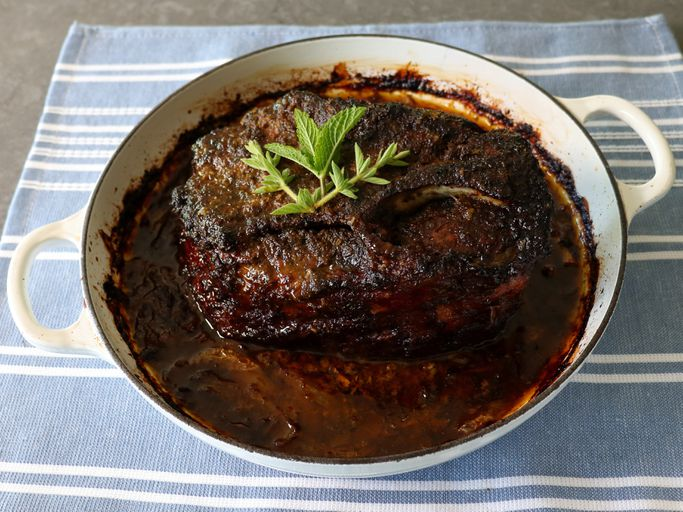

Cuban Mojo Pork

Description
Roasted pork in a dutch oven, marinaded with a traditional sour and citrusy Mojo sauce
Ingredients
- Pork Shoulder
- Oranges
- Limes
- Oregano
- Olive Oil
- Garlic
- Cumin
- Salt
Steps
- Combine garlic, cumin, pepper, oregano, orange juice, lime juice, and olive oil in a large bowl and whisk. Season to taste generously with salt. Transfer half of mojo to a sealed container and reserve in refrigerator. Add pork to remaining mojo and turn to coat. If desired, transfer pork and marinade to a gallon-sized zipper-lock bag and refrigerate 2 hours or up to overnight before continuing.
- Adjust oven rack to lower-middle position and preheat oven to 275°F. Line a rimmed baking sheet with a double layer of heavy-duty aluminum foil. Place pork and juices on top and fold up foil, crimping to seal loosely but making sure that there is room for air to circulate inside. Place in oven and roast for 3 hours. Fold back foil, increase oven temperature to 325°F, and continue roasting, basting pork with pan juices occasionally, until pork shows almost no resistance when a metal skewer or knife is inserted into it and the surface is crackly and brown, 2 to 3 hours longer. Remove pork from oven and let rest 10 to 15 minutes.
- Pour accumulated pork juices into a bowl and discard all except 1 cup. Add reserved mojo to pork drippings, along with fresh chopped mint and oregano. Whisk together and season to taste with salt.
- Serve shredded pork, passing mint mojo and lime wedges on the side. Serve rice, beans, and plantains on the side. Reserve any leftovers for sandwiches.